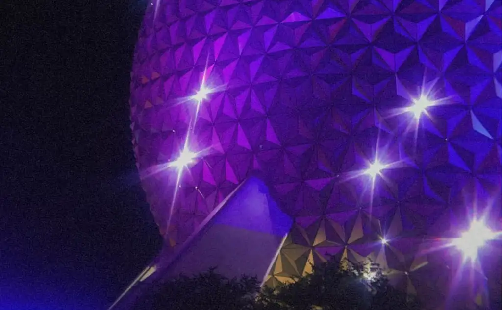

EPCOT
EPCOT stands for Experimental Prototype Community of Tomorrow. It started as Walt Disney’s idea to create a modern and innovative community. When Walt died, the Imagineers had the difficult task of bringing this dream to life. What we are left with is an interesting blend of an 80’s idea of futuristic education, countries and cultures around the world, and modern IPs. The World Showcase has represtentitives from their respective countries working there, and sharing their countries. EPCOT is my very favorite park because I love to walk around and take in the atmosphere and culture. It also has the best ride in Disney World.
Lands
- World Discovery
- World Nature
- World Celebration
- World Showcase
World Showcase Countries
- Mexico
- Best food, and such a fun indoor area.
- Norway
- So pretty, I love Frozen so this is my favorite pavillion.
- China
- Fun shopping and yummy quickservice.
- Germany
- So pretty, and has the best shopping. Has a christmas shop, and toy store, and a glass shop.
- Italy
- Very cool arcitecture.
- American Adventure
- Really delicious quickservice, lots of snacks, and sometimes suprise rare characters.
- Japan
- Very pretty garden, and super fun shopping.
- Morroco
- Very pretty and calm.
- France
- Best ice cream and crepes. Such a fun area.
- United Kingdom
- Fun shops and cute area.
- Canada
- Caramel popcorn and pretty waterfall.
Attractions
- American Heritage Gallery
- Awesome Planet
- Beauty and the Beast Sing-Along
- Bijutsu Gallery
- Canada Far and Wide in Circle-Vision 360
- Disney and Pixar Short Film Festival- another good AC break. So fun to see all of these amazing shorts on a big screen.
- Frozen Ever After- so so fun and magical, but the faces are a little bit creepy.
- Gran Fiesta Tour Starring The Three Caballeros
- Guardians of the Galaxy: Cosmic Rewind- the best ride in all of Disney World. Definitly worth doing multiple times. Incredible roller coaster with 6 songs to collect.
- Journey Into the Imagination With Figment- very odd but fun dark ride, something you just have to experience.
- Journey of Water, Inspired by Moana- so fun and magical- perfect on a hot day.
- Kidcot Fun Stops
- Living with the Land- so beautiful and relaxing, perfect for plant lovers.
- Mexico Folk Art Gallery
- Mission: SPACE
- Remy's Ratatouille Adventure- so fun and immersive. Always use single rider!
- SeaBase Aquarium- so fun and beautiful, the manatees are my favorite.
- The Seas with Nemo & Friends
- Soarin' Around the World
- Spaceship Earth- another old dark ride full of history. A must-do in EPCOT.
- Test Track- fastest ride in DisneyWorld.
Food
Quick Service
- Connections Eatery
- Crepes A Emporter by La Creperie de Paris- best crepes you'll ever have. I love the ratatouille crepe.
- Katsura Grill
- La Cantina de San Angel- incredible bowls and tacos. So so yummy.
- Les Halles Boulangerie-Patisserie- pastries and bread and sandwhiches. Perfect for lunch, breakfast, or a snack.
- Lotus Blossom Cafe- yummy chinese food, no kids meals and large portions.
- Regal Eagle Smokehouse: Craft Drafts and Barbecue- delicious barbecue, super fun theming, large seating area.
- Sunshine Seasons- fun themeing, fresh food, and large indoor seating area. Not open for dinner.
- Tangerine Cafe: Flavors of the Medina
- Yorkshire County Fish Shop
Treats and Snacks
- Block & Hans
- Choza de Margarita
- Connections Cafe
- Fife & Drum Tavern
- Funnel Cake
- Gelateria Toscana- Italian gelato. Super good, but small portions and super expensive.
- Kabuki Cafe
- Karamell-Kuche
- Kringla Barkeri Og Kafe
- L'Artisan des Glaces- such good ice cream. The brioche ice cream snadwhiches are amazing, and the raspberry sorbet is incredible.
- Sommerfest
- Space 220 Lounge
- Swirled Showcase- softserve ice cream, super fun festival foods as well.
Table Service
- Biergarten Restaurant
- Chefs de France
- Coral Reef Restaurant
- GEO-82
- La Creperie de Paris- same crepes that you can get as a quickservice, but there are more options, and if you get the kids meal you get a sweet crepe and a savory crepe, for the price of one adult crepe. Usually only takes about an hour and you can usually make a reservation a couple hours before.
- La Hacienda de San Angel
- Le Cellier Steakhouse
- Space 220 Restaurant
- Spice Road Table
- Takumi-Tei
- Teppan Edo
- Tutto Italia Ristorante
- Via Napoli Ristorante
Character Dining
- Akershus Royal Banquet Hall- super fun princess dining, way better than cinderella's royal table.
- Garden Grill Restaurant- incredible fresh food with a beautiful view over living with the and and mickey and friends in cute farmer outfits.
Shows/Entertainment
Check app for locations and available times.
- Acrobatico
- Atlas Fusion
- Celebracion Encanto
- GoofyCore at CommuniCore Hall
- JAMMitors
- Luminous The Symphony of Us
- Mariachi Cobre
- Marimba de las Americas
- Matsuriza
- Sergio
- Turtle Talk with Crush
- Viva Mexico
- Voices of Liberty- beautiful acapella patriotic and Disney music. Doesn't take a big chunck out of your day and is a must do. For best results, sit on the ground around the red circle.
Characters
Check app for locations and available times.
- Alice- so cute and fun to meet in the flower garden.
- Anna and Elsa- my very favorites to meet, their house is beautiful and it is so fun to meet them both. Usually a pretty long wait but it goes all day.
- Asha
- Belle
- Daisy Duck
- Donald Duck
- Figment- silly little dragon and such a cutie character. Usually his line fills up super fast because he has a lot of loyal fans.
- Mickey Mouse
- Moana
- Princess Jasmine
- Sleeping Beauty- my favorite princess to meet. Her line usually fills up fast.
- Snow White- another fun princess that is in high demand.
- Star-Lord- such a fun character to interact with. Sometimes he stops for meet and greets and sometimes he's roaming.
- Winnie the Pooh- tucked away in the back of the UK pavillion in Christopher Robin's bedroom. So so fun and cute.
EPCOT Festivals
Epcot has seasonal festivals that have so much to offer. These festivals are:
- Festival of the Arts: mid January to late February
- Flower & Garden Festival: early March to ealy June
- Food & Wine Festival: late August to late November
- Festival of the Holidays: late November to late December
Each festival has unique food, events, decor, entertainment, and shopping. Check the app for exact dates.